About Us
Shikrani Club is a Pakistani Club which is primarily in existance because of Hack ClubThis Club main mission is to make Ahmad Siddique's (Leader of this Club) Society teenagers involved in the world of Programming and Technology. Shikrani Club is the best source for students to Learn By Doing. In the guidance of this club leader students will be learning basics of Computer Science and also this Club will help them to kickstart their journey from participating beginner friendly YSWS(you ship we ship) Programs to pro level programs and Hackathons.